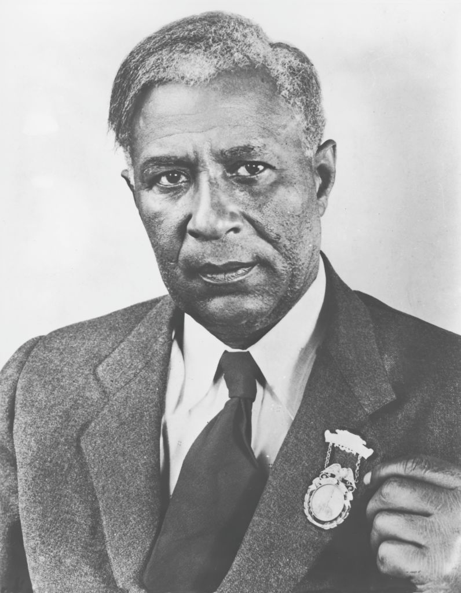

Garrett Morgan

Garrett Augustus Morgan foi um inventor e empresário afro-americano conhecido por suas inovações que salvaram inúmeras vidas. Ele desenvolveu um dos primeiros **sinais de trânsito modernos**, criou uma máscara de segurança para bombeiros e trabalhadores industriais e contribuiu significativamente para a segurança pública.
Principais Contribuições
- Inventou um dos primeiros sinais de trânsito de três posições, ajudando a tornar o tráfego mais seguro.
- Criou a **máscara de segurança para bombeiros**, precursor do atual equipamento de respiração.
- Desenvolveu um tratamento inovador para cabelos, que levou à criação de produtos capilares populares.
Legado e Impacto
- Seu **sinal de trânsito** foi um avanço na segurança viária e inspirou o design dos semáforos modernos.
- A **máscara de segurança** foi amplamente adotada e usada por bombeiros e operários, ajudando a salvar vidas.
- Seu legado como inventor e empresário abriu caminhos para outros afro-americanos na ciência e nos negócios.
Saiba mais
Voltar